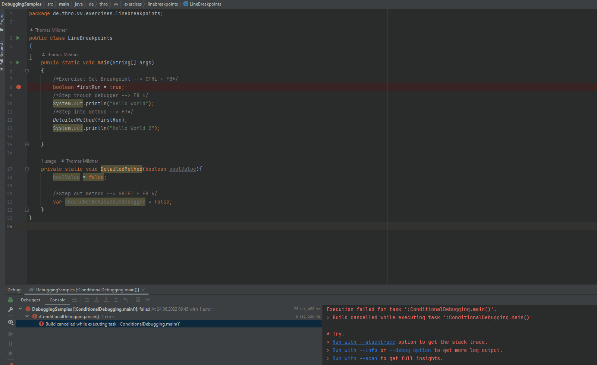
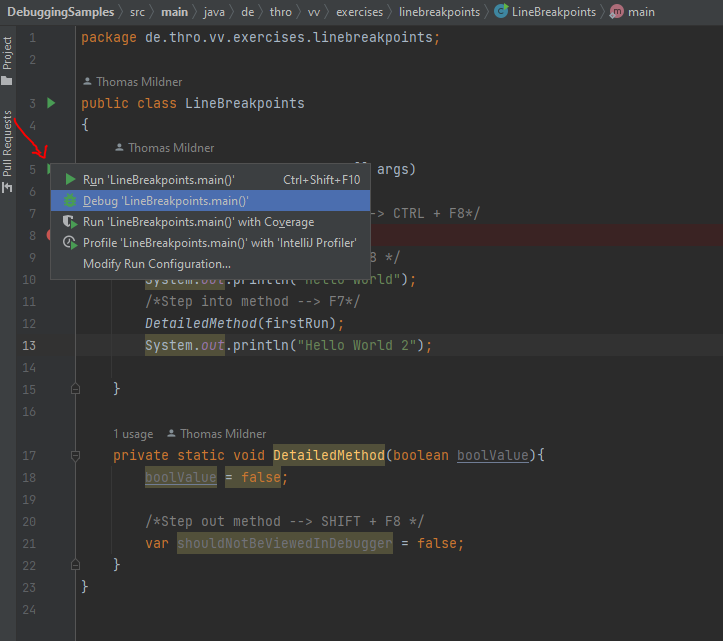
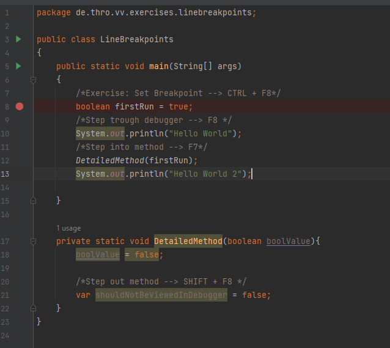
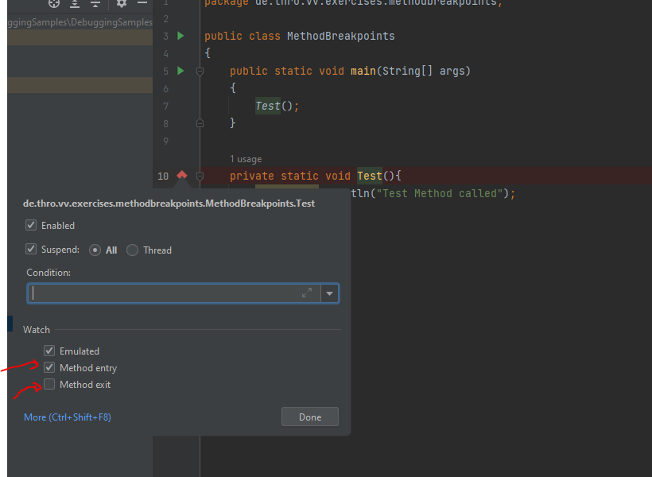
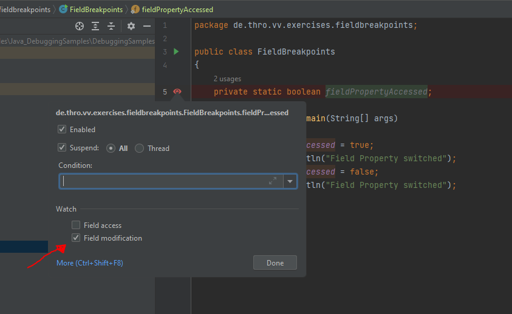
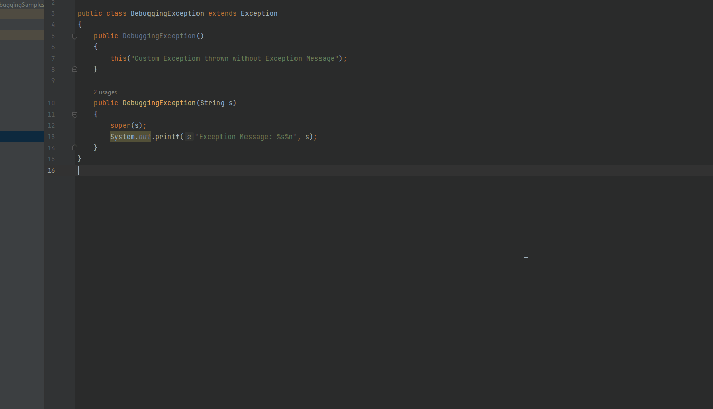
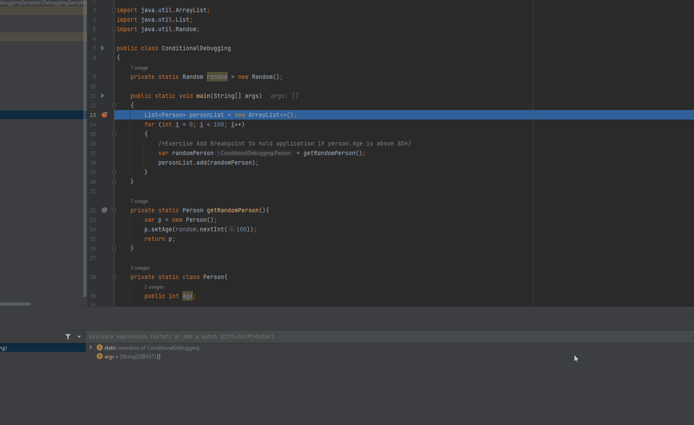
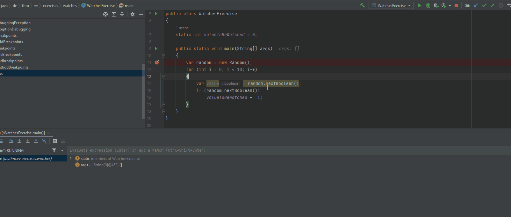
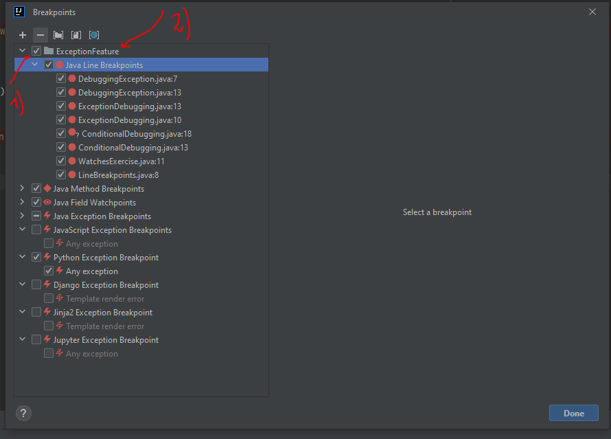

Sample repository with code snippets to practice debugging with IntelliJ IDEA

Start your Application in Debug Mode
Shortcut:
SHIFT + F9
or press the green arrow and select "Debug Main".

Set a breakpoint at any called position where you want to stop the application.
CTRL + F8
Step trough your app and inspect your variables & application behavior
Shortcut:
F8
Continue execution of program
Shortcut:
F9
Terminate debugging session
Shortcut CTRL + F2
Breakpoints are special markers in the development environment that stop regular program execution at a desired point. This allows the developer to examine the program state and behavior to detect errors and incorrect behavior.
The following types of breakpoints are available in IntelliJ IDEA: (vgl. JetBrains Reference)
Line Breakpoints: Suspend the program upon reaching the line of code
where the breakpoint was set. This type of breakpoints can be set on
any executable line of code.

Method Breakpoints: Suspend the program upon entering or exiting the
specified method or one of its implementations, allowing you to check
the method's entry/exit conditions.

Field Watchpoints: To detect access and modification of fields if
caller source is unknown.

Exception Breakpoints: Hold application if specific exception occurs
> CTRL + SHIFT + F8 --> View Breakpoints, ALT + Insert (Exception)

Alternatively, check "Any Exception" to stop the application if an exception occurs.
Hit breakpoint only if the specified condition is met. Especially useful for loops.

Add any variable as Watch. This value then remains fixed in the "Debugger window".

Sometimes a one time breakpoint is useful. For example if the developer
has to be sure his method is hit from the correct method. Set the 'Remove
Once Hit' Checkbox.
Sometimes a lot of breakpoints are needed to understand the correct
behavior of the application. The developer can quickly lose the overview
and gets stuck on "wrong" breakpoints.
The breakpoints can be easily "sorted" here and grouped per
feature / package. For example, for the "Exception Feature"
under point 1) all breakpoints of this feature can be deactivated with one
action. Point 2) demonstrates the named breakpoints.

Toggle line/method/field Breakpoint Shortcut --> CTRL + F8
Edit breakpoint properties --> CTRL + SHIFT + F8
Further settings with --> CTRL + SHIFT + F8
Step further --> F8
Run to next breakpoint --> F9
Use Placeholder:
Wrong
could not cast value of type DemoHomeClass to DemoClass
About 7 results (0,56 seconds)
Better:
Could not cast value of type * to type *
About 1.550.000.000 results (0,51 seconds)
Further Improvement:
site: stackoverflow.com solved Could not cast value of type * to type *
About 4.420.000 results (1,02 seconds) --> StackOverflow Entry with solved question is first result
Exclude Search Results:
Mustang -Car Ford
Show only horse results
Must Have Search Terms:
Mustang "Ford"
Will search for Cars, excluded horses
Combinations:
-site: udemy "java spring boot"
Show results for Java Spring Boot Courses on Udemy
-site: udemy "java RestApi *"
Search on Udemy for Java RestAPI results
blog: java spring boot "jpa" 2020..2022
Search for blog entries that can contain java spring boot and must contain "JPA" in the period from 2020 to 2022.
Clone this Repository:
https://github.com/Thomas-Mildner/DebuggingSamples